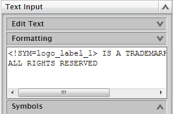
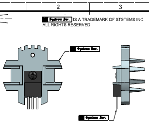

Insert a custom symbol into a note
-
On the Annotation toolbar, click Note
 .
.
-
Click Reset
 to reset all of the options to their default condition.
to reset all of the options to their default condition.
-
In the Text Input group, clear the text box.
-
Under Symbols, from the Category list, select Custom Symbol.
-
Under Folder View, expand the Custom Symbol Library node and select the Part Symbols folder.
-
Under Symbol View, select logo_label.
-
Under Settings, from the Preference list, select Use Definition.
-
Click Insert Symbol to add the symbol to the text window.
-
In the Text Input group, place your cursor in the text box after the text string for the custom symbol, add a space, and then type IS A TRADE MARK OF SYSTEMS INC.
-
Press Enter and type ALL RIGHTS RESERVED.

-
Position the note near the top of the drawing border, click to place it, and then close the Note dialog box.
